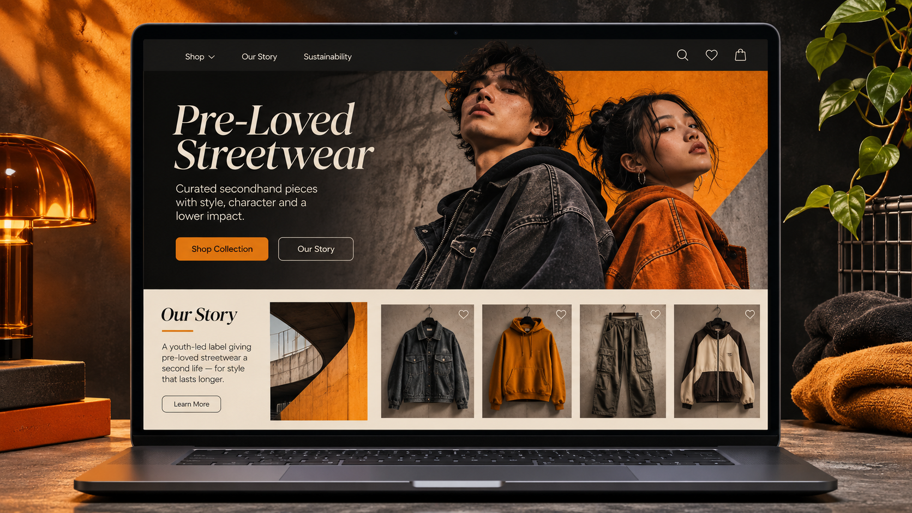

先找到品牌的理由
想清楚为谁服务、如何让闲置衣物重新流动，以及你的品牌与普通二手交易有什么不同。
从校园闲置衣物出发，设计一个有态度的二手潮流品牌。用 AI 把商业想法做成真实可展示的品牌网页，再向大家推介。
从一个想法出发，一步步做出属于你的版本。

网页可作为品牌概念展示和作品集初版，帮助你向同学介绍想法、收集反馈；它不是已上线的交易平台。
网页能打开并展示品牌、示例商品与服务流程；完成品牌方案和约 3 分钟推介。网页为展示原型，不包含真实支付或交易。
固定项目主题，创意和风格由你决定。课堂目标是可展示的初版。
动手做、不断试，让想法逐渐变成你能展示的东西。
想清楚为谁服务、如何让闲置衣物重新流动，以及你的品牌与普通二手交易有什么不同。
用 AI 从零制作包含品牌主张、示例商品、服务流程和行动引导的网页。
介绍目标用户、服务方式、收入假设和如何验证；通过同学提问发现盲点。
从提出问题到检验结果，每一步都由你来决定。
把一个模糊想法变成明确的用户、问题、服务和待验证假设。
通过名称、视觉和文案，让别人快速理解品牌。
用简短推介传达价值，听取反馈并提出下一步测试。
0:00–1:00 构思与开始制作 / 1:00–1:10 休息 / 1:10–2:00 制作初版 / 2:00–2:20 休息 / 2:20–3:05 完善与测试 / 3:05–3:15 休息 / 3:15–4:00 展示与保存
把这次的思路带到你真正感兴趣的领域。